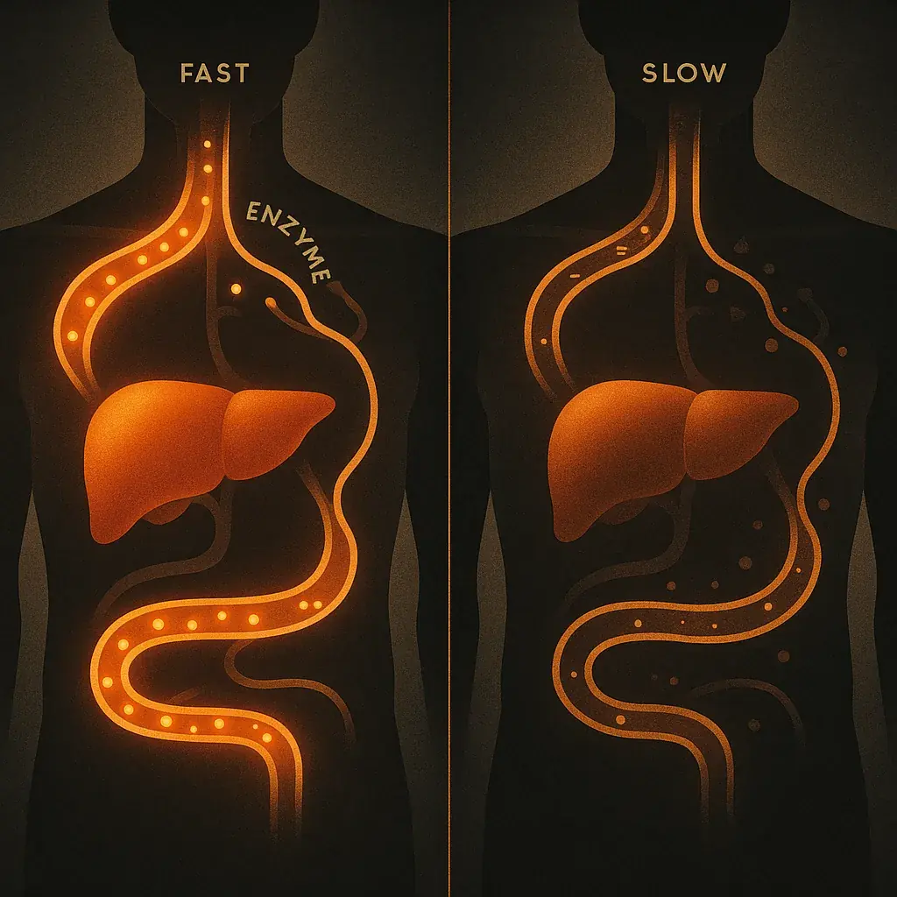
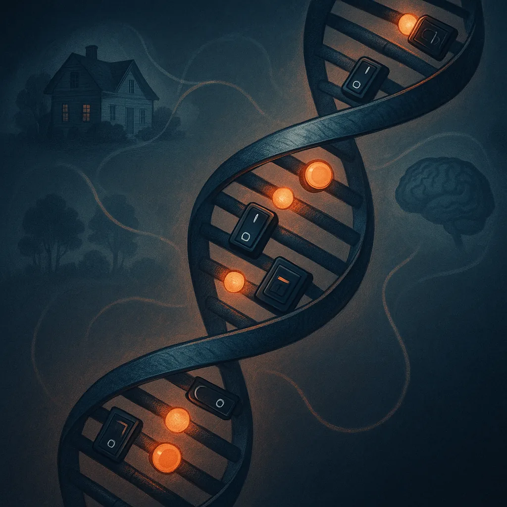

Is there an addiction gene?
Predisposition ≠ Predestination
What, exactly, runs in families?
“Addiction runs in families.” Most of us have heard that sentence. Some of us have lived close enough to it that it feels less like an observation and more like a prediction.
So what, exactly, runs in families? Is there a gene that makes someone an addict before they ever encounter a substance?
No. There is no single gene that determines whether someone will develop an addiction. There are genetic differences that can influence risk. There are also family environments, early experiences, social conditions, and patterns of exposure that shape what happens next. The distinction matters because “increased risk” and “inevitable outcome” are profoundly different things.
Picture a pinball table with a slight incline. The tilt changes the odds of where the ball may travel. It does not tell you where the ball must end up. And the table itself can change: obstacles appear, supports are added, and the next play is never identical to the last.
Predisposition≠Predestination
What can be inherited?
The research points to many genetic influences, most with small effects. Some are shared across different substance use disorders; others are more specific to alcohol, nicotine, or another substance. There is no DNA result that can read out a person's future. Large genetic studies can identify patterns across populations, but their current scores cannot reliably predict whether a particular child will develop an addiction. [1]
These influences may affect several parts of the story: how strongly a substance is felt, how the body processes it, sensitivity to stress or reward, and traits that can influence behaviour. A person does not inherit “addiction” as one intact package. They inherit a particular mix of biological starting conditions that meets a particular life. [2]

How it lands in your body
Alcohol metabolism offers one concrete example. Variants affecting the enzymes that break down alcohol can make drinking physically unpleasant for some people and change their risk of alcohol use disorder. That is a substance-specific effect, not an all-purpose addiction gene. I have written elsewhere about how differently alcohol seemed to affect my father and me. That observation alone cannot tell us which genetic variants either of us carried. It does show why “the same substance” is not necessarily the same experience in two bodies. [3]
A percentage is not a prediction.
The phrase “addiction is 50 or 60 percent genetic” is easy to misunderstand. Estimates of heritability describe differences in risk across a studied population. They do not mean that half of one person's addiction came from genes and the other half from life. They certainly do not mean that anyone's future is already half decided. The size of an inherited influence also depends on the conditions in which it is measured. [2]
Before substance use begins
We arrive at the first drink or drug with a history. The developing brain and body have already responded to nutrition, stress, relationships, illness, safety, and opportunity. Pregnancy and early life are important periods of development, but no single prenatal condition writes a future diagnosis. The research on developmental origins helps explain how early conditions can affect later health; it does not give us a simple formula for addiction. [4]
That is why a discussion of predisposition has to include more than DNA. A child growing up around substance use may share genetic risk with a parent. They may also learn patterns of coping, face the same pressures, have easier access to substances, or live with stress that shapes their responses. Someone else may grow up with little family history and still develop a serious substance use disorder. Genes and experience keep meeting one another; neither operates in isolation. [5]
Trauma belongs in this conversation. It can affect stress regulation, relationships, and the search for relief. It deserves to be taken seriously, especially when a person has been taught to see adaptations to adversity as defects in their character. But it is not a required origin story. Not everyone with an addiction has a trauma history, and not everyone with a trauma history develops an addiction. Looking for the actual pressures in a person's life is more useful than assigning everyone the same explanation.

Where epigenetics fits
Your DNA sequence and the activity of your genes are related, but they are not identical. Epigenetics examines some of the processes that regulate gene activity without rewriting the DNA sequence. Researchers study genes such as NR3C1 and SLC6A4 in relation to stress, development, and gene expression. That is different from saying a person inherited an “addiction gene,” and a finding about one molecular marker cannot tell the whole story of one life. [6], [7]
The same care matters when we talk about intergenerational trauma. Families can pass on patterns through caregiving, exposure, social conditions, and biology. Researchers are investigating whether acquired epigenetic changes also pass between human generations. The human evidence does not yet let us confidently separate that proposed route from the many other ways families share risk and experience. We can take the effects of intergenerational trauma seriously without claiming a mechanism has been proved when it has not. [8]
The story changes after exposure, too
Predisposition describes risk before and around exposure. Substance use can then change the system itself. Repeated use can alter reward, stress, learning, and decision-making circuits. Cues that once meant little may begin to carry a powerful promise of relief. For some people, stopping becomes difficult even as the costs become unmistakable. Those changes help explain why a problem can persist; the brain's capacity to change also matters in recovery. [9]
This is the fuller picture to consider: what a person inherited, what happened during development, what their environment asked of them, how a substance affected them, and what repeated use changed. Each part matters. No single part gets to declare the whole person.
What the “allergy” metaphor explains
For many people in AA, the language of an “allergy of the body” and an “obsession of the mind” gave a frightening experience a name. It described the person who found that one drink could set off a craving they struggled to stop. It also helped some people make a firm decision not to take that first drink. I would not ask anyone to surrender a framework that helps protect their recovery. [10]
The metaphor has limits as an explanation of biology. Alcohol use disorder is not generally a literal allergy. An actual alcohol flush reaction, for example, is an inherited form of intolerance related to alcohol metabolism, and it often has a protective effect against heavy drinking. Craving and loss of control involve a broader mix of inherited vulnerability, exposure, learning, and changes in brain function. [11], [9]
We can respect what the older language helped people recognize and still ask the next question: why did this particular person become vulnerable, and what might help them now?
Questions worth asking
You can protect your recovery and still ask how you arrived here.
01“It runs in my family. How can you say there is no gene?”
Family history is meaningful. Relatives can share many genetic variants and a great deal of environment. The claim here is precise: there is no single gene that determines addiction. Family history raises questions about risk; it cannot provide a verdict on one person.
02“Once I start, I can't stop. Isn't that the allergy?”
That experience of craving deserves to be believed. “Allergy” may describe how sudden and powerful it feels. The term is a metaphor for most people with alcohol use disorder, while modern research examines craving through reward, learning, stress, and the effects of repeated use. Understanding those mechanisms does not make the experience less serious.
03“That explanation kept me sober. Why challenge it?”
A useful recovery rule can remain useful. This page is concerned with what happens when a metaphor is treated as a complete explanation of every person's biology and history. You can protect your recovery and still be curious about how you arrived here.
04“I had no childhood trauma, so your model doesn't explain me.”
Fair. There is no required trauma story. Genetics, mental health, the effects of a substance, access, social circumstances, repeated exposure, and other experiences can combine differently for different people. The work is to understand your pattern.
05“If predisposition isn't destiny, are you saying I can safely drink or use again?”
No. Population research cannot tell an individual that returning to a substance is safe. If abstinence protects your recovery, nothing on this page argues for testing it. The point is that risk is not a fixed identity, and there are meaningful ways to respond to it.
06“If environment played a role, aren't you excusing harmful behaviour?”
Understanding how a pattern developed helps a person take responsibility for changing it. If all I know is “there's something wrong with me,” shame becomes my explanation, and I'm left without a way forward. Learning how my biology, early experiences, environment, and repeated substance use shaped my responses lets me understand myself more accurately.
I can recognize what I'm vulnerable to, seek care that fits, change the conditions I can change, and repair harm I've caused. The consequences still matter. Understanding the mechanisms gives me a better chance of doing something about them. Shame and stigma can also keep people from seeking help. [12]
The point of knowing
I used to hear genetic predisposition as a sentence passed down before I had a chance to live. I resisted it because I thought accepting biology would mean surrendering agency. The more I learned, the less useful that fear became.
A predisposition can help explain why one route was easier to fall into. Development and experience help explain why that route was there in the first place. Understanding both can loosen the grip of shame and show us where help might actually work. None of that makes the losses disappear. It gives us a more honest place to begin.
The table may have been tilted. The ball was never told where it had to land.
The short version · 30 secondsTL;DRCollapse summary
There is no single addiction gene. Many genetic influences can change a person's risk, while development, environment, relationships, exposure, and repeated substance use also shape the outcome. Family history matters, but it combines biology with shared experience. Understanding these mechanisms can help replace shame with a clearer picture of what happened and what can change.
The takeaway: Predisposition ≠ predestination.
↑ Back to topWhere to next?
Sources & further reading
- Hatoum, A. S., et al. (2023). Multivariate genome-wide association meta-analysis of over 1 million subjects identifies loci underlying multiple substance use disorders. Identifies shared and substance-specific genetic associations; supports the distinction between polygenic risk and individual prediction. View source
- National Institute on Alcohol Abuse and Alcoholism (NIAAA). Risk Factors: Varied Vulnerability to Alcohol-Related Harm. Explains inherited influences, alcohol response, metabolism, and environmental factors. The heritability estimates concern alcohol use disorder and populations, not a fixed percentage of one person’s future. View source
- NIAAA. Alcohol Metabolism. Explains how genetic and environmental differences affect the processing of alcohol and its effects. View source
- Developmental origins research (2015). Developmental Origins of Health and Disease: Integrating Environmental Influences. Reviews early nutrition, stress, and environmental exposures in relation to later health. This provides developmental context, not a formula for predicting addiction. View source
- NIAAA. Understanding Alcohol Use Disorder. Describes the condition, risk factors, family influences, and evidence-based treatment options. View source
- Parent, J., et al. (2017). Dynamic stress-related epigenetic regulation of the glucocorticoid receptor gene promoter during early development: The role of child maltreatment. Examines changes in NR3C1 methylation measured in saliva. Findings illustrate the complexity of adversity-related associations and do not provide an individual addiction test. View source
- Kang, H. J., et al. (2013). Association of SLC6A4 methylation with early adversity, characteristics and outcomes in depression. Investigates associations in patients with depression. It is an example of epigenetic research, not evidence of a single addiction gene. View source
- Scoping review (2023). Biological Embedding of Early-Life Adversity and a Scoping Review of the Evidence for Intergenerational Epigenetic Transmission of Stress and Trauma in Humans. Reviews the preliminary human findings and the difficulty of separating epigenetic transmission from shared genes, caregiving, and environment. View source
- NIAAA. Neuroscience: The Brain in Addiction and Recovery. Explains reward, stress, learning, and other neurocircuits, as well as the role of brain plasticity in recovery. View source
- Alcoholics Anonymous. The Doctor’s Opinion. The historical source for the physical “allergy” and craving explanation. Included to represent the original account accurately. View source
- NIAAA. Alcohol Flush Reaction: Does Drinking Alcohol Make Your Face Red? Distinguishes alcohol intolerance from allergy and explains the role of inherited enzyme variation. View source
- NIAAA. Stigma: Overcoming a Pervasive Barrier to Optimal Care. Discusses shame, stigma, and barriers to seeking help. Understanding alone is not presented as a guaranteed way to resolve shame. View source
These references support the distinctions between inherited risk, development, epigenetics, and the effects of substance use. The AA text is included as a historical source. Educational context, not an individual prediction or diagnosis.